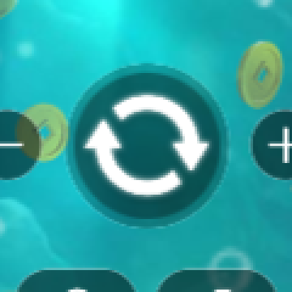
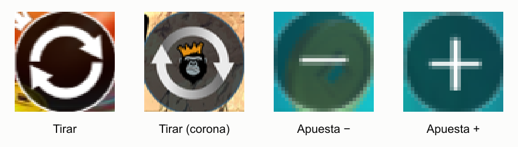

Informe 1 — Escenario 1: tirada completada en Real Play
Resultado: ✅ todas las comprobaciones superadas · betsson.es · Pragmatic Play Triple Hop Pots · Real Play · apuesta mínima · ejecución real del 15/10/2026 (15:09–15:10, 1,3 min), desde un Brave con perfil vacío.
Comando: npm run all (parte 1) o, suelto, npx playwright test --project=betsson.es tests/scenarios/scenario1-real-play-spin.spec.ts.
Qué pide el reto y qué se comprobó en pantalla
| Requisito del reto | Paso atómico | Lo que se vio en pantalla | Resultado |
|---|---|---|---|
| Abrir el lobby y autenticarse | site.loggedIn | saldo visible en la cabecera de Betsson | ✅ |
| Lanzar un juego de Pragmatic Play | site.goToGame | ficha game-detail-pragmaticPlayTripleHopPots | ✅ |
| Entrar en Real Play | site.gameSession | aviso de juego responsable aceptado · límites: tiempo «5 Horas», pérdidas «25 % (26,57 €)» | ✅ |
| El juego se ve | game.attach | canvas del proveedor renderizado (no en blanco) | ✅ 4,8 s |
| El juego está listo | game.enter | intro superada · CRÉDITO y APUESTA legibles | ✅ 14,2 s |
| Leer el saldo de Betsson antes | betsson.readBalance | 106,26 € | ✅ |
| Identificar apuesta y moneda | game.readHud | CRÉDITO 106,26 € · APUESTA 0,10 € · EUR · etiquetas en español · dos lecturas iguales | ✅ |
| Solo tirar si es seguro | money.preflight | crédito ≥ apuesta, Betsson ≥ apuesta, EUR | ✅ |
| Localizar el control y tirar | game.spin | botón encontrado por imagen (plantilla con corona, coincidencia 0,86, localizado por Hough) · los rodillos se mueven | ✅ |
| La tirada empezó y terminó | game.spinEnd | botón disponible + rodillos quietos + CRÉDITO estable 5 lecturas | ✅ 6,1 s |
| La apuesta mostrada es la usada | money.wagerUsed | apuesta antes 0,10 € = después 0,10 € · cobrado 0,10 € | ✅ |
| Saldo del juego coherente | money.game | 106,26 − 0,10 + 0,00 = 106,16 € · leído 106,16 € | ✅ |
| Saldo de Betsson cuadra | money.betsson | 106,26 − 0,10 + 0,00 = 106,16 € · leído 106,16 € (1 lectura) | ✅ |
| Extra: saldo de la página = último CRÉDITO | site.exitBalance | al salir del juego: página 106,16 € = juego 106,16 € | ✅ |
Regla del reto: saldo después = saldo antes − apuesta + premio. Esta tirada no tuvo premio (0,00 €), así que el saldo bajó exactamente la apuesta. Lo comprobamos dos veces: en el juego (OCR) y en Betsson (DOM de la web).
Lo que ve el checker
Captura real anotada por el checker (calibración, sin tirada): zona del HUD, CRÉDITO 105,10 € y APUESTA 0,10 € leídos por OCR (etiquetas verdes), botón de tirar localizado por imagen (recuadro rojo, coincidencia 0,83) y zona de rodillos (morado) donde se mide el movimiento.

El botón de tirar visto de cerca, y las plantillas con las que el checker reconoce los controles:


Log real de la ejecución (extracto)
15:09:37 ✓ [site.loggedIn] balance visible in the header
15:09:45 ✓ [site.goToGame] game "triple-hop-pots" · detail id game-detail-pragmaticPlayTripleHopPots (7.8s)
15:09:47 ✓ [site.gameSession] responsible-gambling notice acknowledged → limits: play time "5 Horas", loss limit "25% (26,57 €)"
15:09:52 ✓ [game.attach] canvas rendered (4.8s)
15:10:06 ✓ [game.enter] playable in 14.2s · CREDIT 106.26 EUR · BET 0.10 EUR
15:10:15 ✓ [betsson.readBalance] 106.26 EUR
15:10:19 ✓ [game.readHud] CREDIT 106.26 EUR · BET 0.10 EUR
15:10:19 ✓ [money.preflight] safe to spin
15:10:21 ✓ [game.idleNoise] idle change 2.4%
15:10:25 ✓ [game.spin] clicked round arrows button found by image (spin-crown.png), score 0.86 (located by Hough, confirmed by image); reels move
15:10:31 ✓ [game.spinEnd] settled in 6.1s · CREDIT 106.16 stable for 5 reads, spin button available
15:10:31 ✓ [money.wagerUsed] BET shown 0.10 → after 0.10 · debited 0.10
15:10:31 ✓ [money.game] 106.26 − 0.10 + 0.00 = 106.16 EUR · read 106.16 EUR
15:10:34 ✓ [money.betsson] 106.26 − 0.10 + 0.00 = 106.16 EUR · read 106.16 EUR (1 reads)
15:10:37 ✓ [site.exitBalance] in-game CREDIT 106.16 EUR · Betsson page 106.16 EUR
✓ Scenario 1 — completed Real Play spin (1.3m)Por qué es una prueba «como un jugador»
- El juego es un canvas: nunca se lee su DOM. Saldo, apuesta, premio y botones salen de los píxeles (OCR y visión).
- El clic no es la prueba: la tirada cuenta como empezada solo si los rodillos cambian por encima del ruido de las animaciones en reposo (medido antes: 2,4 %) o si cambia el crédito.
- Nunca se tira con un valor mal leído:
money.preflightexige dos lecturas iguales, la moneda del mercado y saldo suficiente. Si algo no cuadra, no se tira.
Intelligent Game Validation · Betsson × Malackathon 2026 · generado desde docs/reports/*.md (npm run reports:html)